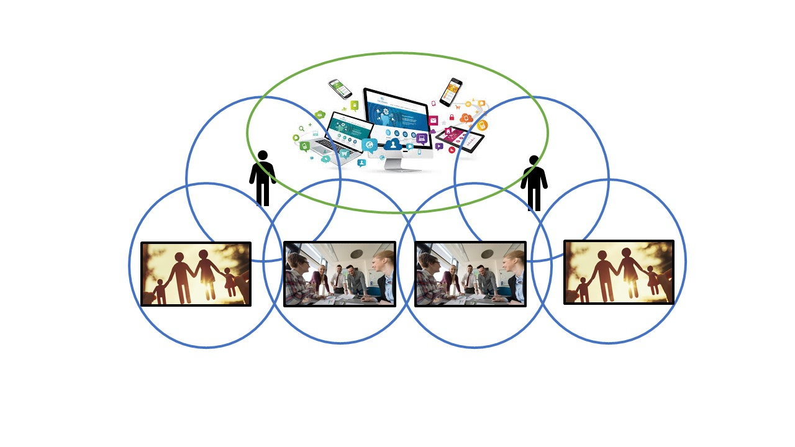
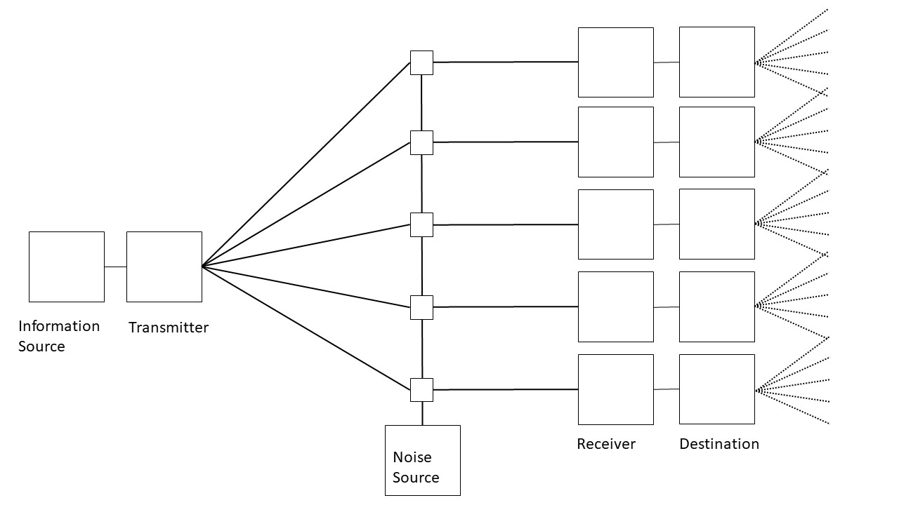
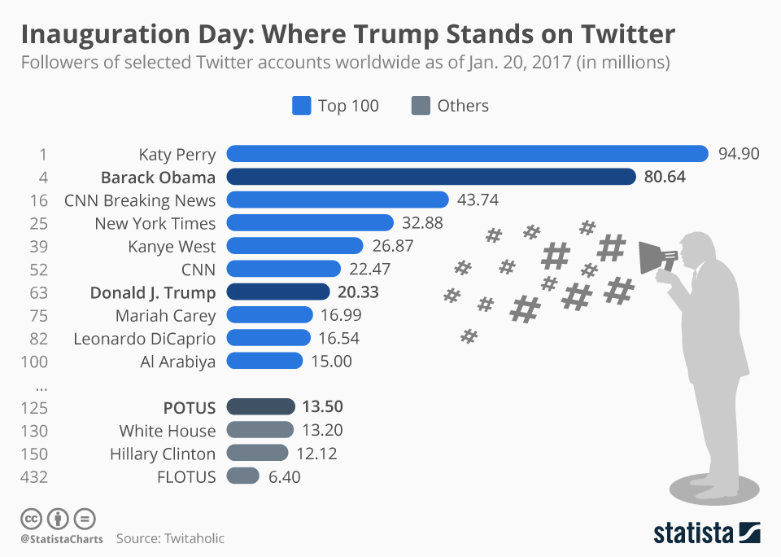
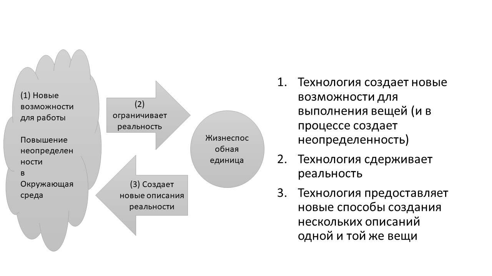
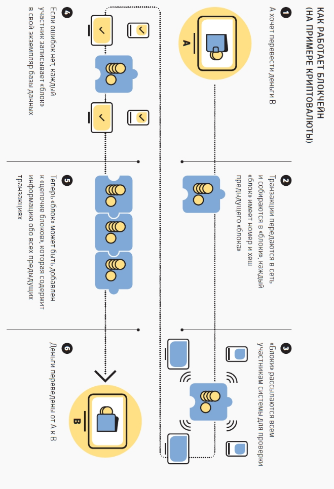
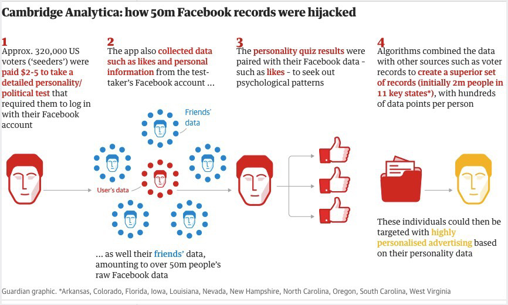

Технологии¶
1. Почему технологии?¶
КЛЮЧЕВЫЕ ВОПРОСЫ:
Сколько времени вы проводите в Интернете?
Сколько времени вы тратите на общение в социальных сетях или просмотр социальных сетей?
Смогли ли бы вы жить без телефона? или Интернета?
ПОЧЕМУ ЭТО ВАЖНО?
Технологии коренным образом изменила окружающую среду. Вы первое поколение, которое не сможет вспомнить мир без Интернета.
Технологии трансформирует мир трудоустройства. Многие традиционные рабочие места были автоматизированы, и многие из традиционных профессий, таких как юриспруденция, преподавание, бизнес и менеджмент, были принципиально и до неузнаваемости трансформированы технологиями. Какую бы карьеру вы ни выбрали для себя - будь то преподавание, медицина, торговля акциями, даже будучи художником, - весьма вероятно, что большая часть этого будет связана с необходимостью смотреть на экраны и работать с программным обеспечением.
Технологии постоянно меняются. Они всегда будет продолжать меняться.
ГДЕ Я МОГУ УЗНАТЬ БОЛЬШЕ?
2. Компьютер¶
КЛЮЧЕВЫЕ ВОПРОСЫ:
Что компьютер делает для людей?
Что сделал компьютер для общества?
Как мы можем жить в гармонии с компьютерами в будущем?
ПОЧЕМУ ЭТО ВАЖНО?
Технология и компьютеры позволяют создавать новые формы контроля над людьми.
Компьютеры создали новый тип системы человек-машина в обществе, где ограничениями можно легко манипулировать. Мы не совсем понимаем, как наша новая системы человек-машина отличается от социальной системы наших родителей.
Компьютеры облегчают манипулирование ограничениями. Например то, как на экране компьютера отображаются изменяющиеся возможности при вводе фразы в поисковую систему, щелкните гиперссылки, которые нам представлены, а затем обсудите, какие новые возможности для действий были запрограммированы на определенные веб-страницы, иллюстрирует, как ограничения может быть изменено.

Человеческий опыт этого процесса напоминает нам о системе человек-машина, в которой мы находимся: очень реальные эмоции возникают в ответ на механические процессы, не отличающиеся от фундаментального эмоционального воздействия физических ограничений, таких как тюремные стены, системы одностороннего движения транспорта, центрального отопления или будильника.
Слово «com-puter» происходит от латинского «com-putare». «Putare» означает размышлять- так что компьютер - это средство размышления. С точки зрения какой науки мы можем исследовать это, и с помощью каких инструментов мы можем теперь организовывать себя?
ГДЕ Я МОГУ УЗНАТЬ БОЛЬШЕ?
3. Интернет как ‘Lifeworld ‘¶
КЛЮЧЕВЫЕ ВОПРОСЫ:
Как компьютер повлиял на то, что мы считаем «реальным»?
Как компьютер повлиял на то, что мы считаем «истинным» или «ложным»?
Как компьютер повлиял на то, как мы себя чувствуем?
ПОЧЕМУ ЭТО ВАЖНО?
Диаграмма демонстрирует способ, с помощью которого компьютеры создают миры, в которых мы обитаем. Сегодня мы путешествуем по этим мирам, не задумываясь об этом. Этот феномен не существовал во времена, когда компьютеры не существовали.
Концепция «Жизненный мир/Lifeworld» - это способ говорить о вашей повседневной окружающей среде: обо всем, что вы считаете «реальным миром». Этот мир может быть виртуальным и реальным.
У каждого из нас разные взгляды на реаль- ность, и, хотя некоторые вещи, такие как кам- ни и деревья, кажутся универсальными, мы так думаем только потому что мы наблюдаем, как другие ведут себя предсказуемо с камня- ми и деревьями.

Что-то происходит между нами в «реальном мире». Слово «интерсубъективный» описыва- ет то, что происходит между нами. Изучением взаимодействия занимается феноменология. Ученые, которые считаются ключевыми фигурами в феноменологии – Эдмунд Гуссерль и Альфред Шюц. Гуссерль и Шюц ссылались на понятие «жизненный мир» как на контекст, в котором происходит интерсубъективное взаимодействие.
Компьютер преобразовал «жизненный мир» всех. Стали ли наши жизненные миры неустойчивыми? Одна общая среда, в которой наши ожидания могут быть скоординированы, изменилась на множественные «жизненные миры», в рамках которых люди перемещаются.
Даже в ситуациях лицом к лицу, таких как лекции, студенты часто будут находиться в разных «жизненных мирах», когда они отвлекаются на социальные сети или другие онлайн-отвлекающие факторы.
ГДЕ Я МОГУ УЗНАТЬ БОЛЬШЕ?
4. Социальные медиа¶
КЛЮЧЕВЫЕ ВОПРОСЫ:
В чем разница между разговором на форуме в социальных сетях и беседой с кем-то лицом к лицу?
С кем вы разговариваете, когда вы размещаете посты на форуме в социальных сетях?
Откуда вы знаете, что вы действительно общались с кем-то в социальных сетях?
Откуда вы знаете, что вы действительно общались с кем-то лицом к лицу?
ПОЧЕМУ ЭТО ВАЖНО?
Представьте себе частную беседу между вами и вашим другом: слова, о которых говорит один из вас, слышит только другой человек, и его слова слышите только вы. Конечно, ваш друг мог бы рассказать другим, что вы ему сказали, но это будет уже другой частный разговор.
Социальные медиа расширяют аудиторию любой потенциальной коммуникации, поэтому вы больше не разговариваете с одним человеком, но с потенциальными миллионами.
Когда вы разговариваете лицом к лицу для того, чтобы общаться, вы должны передать смысл того, что вы хотите сказать. Иногда вам нужно тщательно подбирать слова. Вы можете судить, понимает ли другой человек, на основе того, как он реагирует на то, что вы говорите. Если они не реагируют так, как вы ожидали, вы пытаетесь сказать то же самое по-другому?
Успешна ли ваша коммуникация, если человек, с которым вы разговариваете, говорит и ведет себя так, как вы от него ожидаете? Этот процесс был теоретизирован социологом Талкоттом Парсонсом, который назвал его «Двойная случайность» (Parsons and Smelser 2012, Luhmann 1996)
Поскольку социальные сети взаимодействуют с тысячами людей, ваше общение может быть успешным с кем-то из тысяч людей, даже если вы не будете подстраивать то, как вы это говорите.
Это означает, что любое общение в социальных сетях может потенциально быть успешным с кем-то в сетевом наборе возможных отвечающих.
ГДЕ Я МОГУ УЗНАТЬ БОЛЬШЕ?
{width=”\columnwidth”}
{width=”\columnwidth”}
5. Социальные сети и коммуникация: Твиты Трампа!¶
КЛЮЧЕВЫЕ ВОПРОСЫ:
Когда Трамп пишет в Твиттере, что происходит в социальных сетях?
Как количество людей в социальных сетях меняет способ общения?
Как мы решаем, какую медиа-платформу мы будем использовать для коммуникации?
ПОЧЕМУ ЭТО ВАЖНО?
На приведенной выше диаграмме показана коммуникационный вызов социальных сетей
Отправитель думает о сообщении для электронной отправки, которое содержит «шум» разных видов (например, разное понимание, разные культуры и т. д.),
Существует много (миллионов) возможных получателей сообщения.
Среди одного или двух таких получателей кто-то поймет сообщение и передаст его еще более широкой аудитории.

6. Когнитивные искажения и троллинг¶
КЛЮЧЕВЫЕ ВОПРОСЫ:
Почему в социальных сетях наблюдался взрыв злоупотребления: женоненавистничество, расизм, троллинг, преследование и фальшивые новости?
Что такого в онлайн-общении, из за чего люди могут свободно говорить вещи, которые они не бы не сказали лицом к лицу?
ПОЧЕМУ ЭТО ВАЖНО?
«Когнитивное искажение» - это термин означающий то как взаимодействия формируются под воздействием коммуникации других людей.
Социальные медиа предоставляют способы, с помощью которых очень большой аудиторией можно манипулировать с помощью сообщений, с которыми многие могут не согласиться, но которые распространяются на просторах Интернета.
«Троллинг» - это форма злоупотребления, которая основана на когнитивном искажении. Оскорбительные или бездумные сообщения создаются из-за того, что существуют сообщества, которое будет одобрять их, но также такие сообщества и одобряют негативные последствия этих сообщений.
Выбор аудитории по высказыванию или множественному описанию может усугубить политическую неопределенность, на которую институциональные структуры должны реагировать.
Иногда реакция таких институтов, как правительства, усиливает неопределенность.
ГДЕ Я МОГУ УЗНАТЬ БОЛЬШЕ?
https://www.youtube.com/watch?v=QRut1CWws0U


7. Повышают ли технологии неопределенность?¶
КЛЮЧЕВЫЕ ВОПРОСЫ:
Когда кто-то изобретает новый инструмент, как часто это предоставляет новый способ делать то, что мы делали раньше?
Как часто он предоставляет способ делать то, чего раньше не было?
Почему одна технология заменяет другую? Почему некоторые технологии не могут найти пользователей?
ПОЧЕМУ ЭТО ВАЖНО?
Любая новая технология создает новый вариант для того чтобы делать что-то. Давным-давно, единственным способом передвижения была пешая прогулка или езда на лошадях. Новые варианты были созданы железными дорогами, автомобилями, самолетами и так далее.
То же самое происходит и с коммуникацией: когда-то мы должны были быть рядом с человеком, с которым мы разговариваем. Новые варианты были созданы благодаря изобретению письма, печати, телефона и Интернета? 
Сегодня у нас есть ошеломительный выбор: написать ли бумажное письмо, отправить электронную почту, твит, смс или сделать телефонный звонок?
Каждый новый вариант для того чтобы что-то делать создает еще большую неопределенность в решении: технологии создают неопределенность.
Технологии также может ограничить наши возможности действовать определенным образом: закрытые ворота или ограждения могут ограничивать, то как люди передвигаются в физическом мире.
Компьютерные системы сегодня предоставляют пользователям «формы» для заполнения таких данных, как ваше имя, адрес, номер телефона, пароль и т. д.
Они ограничивают: технологии ограничивают варианты.
Технологии, такие как компьютеры, используют алгоритмы для создания новых способов взглянуть на мир, к которому у нас не было бы доступа без них.
Технологии расширяют описания мира.
Компьютер выполняет все эти три вещи одновременно.
8. Технологии и обратная связь¶
КЛЮЧЕВЫЕ ВОПРОСЫ
Чем вы похожи на робота?
Чем вы похожи на растение?
Как вы адаптируетесь к окружающей вас среде?
ПОЧЕМУ ЭТО ВАЖНО?
Современный компьютер был разработан в 1940-х годах как результат технологических инноваций, возникших после Второй мировой войны.
Одним из принципов современного компьютера была концепция обратной связи: где выходы системы подключены к ее входам. Было отмечено, что системы с обратной связью демонстрируют «реалистичное» поведение, и многие ученые были очарованы этим реалистичным поведением прямо в начале эволюции компьютера.
Современные технологии Искусственного интеллекта (ИИ) и Больших данных основаны на обратной связи. Что еще более важно, большинство методов и технологий ИИ не новы, но были изобретены одновременно с цифровым компьютером - в конце 1940-х годов некоторыми из ведущих деятелей кибернетики: Уоррен МакКаллох, Норберт Винер, Джон фон Нейман.
Что нового сегодня, так это то, что мы
подключили каждого человека на планете в информационную сеть, так что принципы интеллекта и обратной связи, представленные в 1940-х годах, теперь действуют и на людей в этой сети.
Российская кибернетика и компьютерные вычисления начались после смерти Сталина, который запретил ее, потому что считал антикоммунистической. Такие люди, как Виктор Глушков, были пионерами в области вычислительной техники в России.
Должен ли интернет быть создан на серверах, в которых хранятся файлы, к которым обращаются пользователи при вводе веб-адреса?
Что происходит, когда один из этих серверов (например, google) перестает работать?
Существует ли альтернативный способ организации файлов, где они существуют повсюду, а не в одном месте? Каковы последствия организации вещей по-другому?
ГДЕ Я МОГУ УЗНАТЬ БОЛЬШЕ?
9. Децентрализация¶
КЛЮЧЕВЫЕ ВОПРОСЫ
Должен ли интернет быть создан на серверах, в которых хранятся файлы, к которым обращаются пользователи при вводе веб-адреса?
Что происходит, когда один из этих серверов (например, google) перестает работать?
Существует ли альтернативный способ организации файлов, где они существуют повсюду, а не в одном месте? Каковы последствия организации вещей по-другому?
ПОЧЕМУ ЭТО ВАЖНО?
Когда был разработан Интернет, идея заключалась в том, что каждая машина должна быть подключена к любой другой машине без центральной точки управления.
Протокол, через который работает веб-сайт, Hyper-Text Transport Protocol (http), полагается на наличие серверов, которые доставляют документы.
По мере развития сети она воспроизвела централизованную структуру общества, где корпорации и правительства имеют крупнейшие веб-сайты. Поэтому вместо свободной и открытой сети, где все равны, у нас есть сеть, в которой доминируют несколько корпораций.
Веб-децентрализация фокусируется на том, как уменьшить нагрузку на отдельные серверы, распространяя файлы на множестве серверов. Он также рассматривает возможность распространения доступа в Интернет в некоторых частях мира, где инфраструктура здания не является жизнеспособной, как сельские районы. Он также стремится решить проблемы, связанные с волнением граждан о наблюдении.
Blockchain - одна из форм децентрализации, но также появляются такие новые технологии, как файловая система Inter-planetary (http://ipfs.io) и несколько подобных децентрализованных протоколов, таких как DAT (https://datproject.org/).
Также развивается аппаратное обеспечение для поддержки децентрализации. Устройство Gotenna (см. https://www.gotenna.com/pages/mesh) представляет собой небольшой радио-повторитель, который передает сигнал на 4 мили и может легко сформировать сотовую сеть с другими приемниками Gotenna по соседству.
ГДЕ Я МОГУ УЗНАТЬ БОЛЬШЕ?
10. Blockchain и BitCoin¶
Возможно ли существование валюты без центрального банка?
Если какое-либо учреждение, такое как банк, может быть заменено технологиями, то как насчет других институтов, таких как университеты?
Если учреждения обеспечивают доверие к валюте, как технологии устанавливают равную степень доверия?
ПОЧЕМУ ЭТО ВАЖНО?
Одной из функций таких учреждений, как банки, университеты или больницы, является обеспечение доверия к их услугам. Люди используют учреждения, потому что они доверяют честности того, что делает учреждение.
Например, банкнота обычно содержит «обещание» банка выплатить сумму, которая написана на бумаге. BitCoin предоставляет способ, которым доверие может быть установлено просто с помощью алгоритма, а не требовать учреждения. 
Не менее важно то, что алгоритм BitCoin представляет собой распределенную технологию, называемую Blockchain, которая не хранит данные о транзакции на каком-либо одном сервере.
Алгоритм Blockchain представляет собой «цепочку цифровых подписей», которые выступают в качестве открытой и прозрачной книги операций в валюте биткойнов (Nakamoto n.d.)
Blockchain имеет два основных качества, которые гарантируют, что система заслуживает доверия. Во-первых, весь Blockchain - список всех транзакций - распространяется и дублируется по всему Интернету. Во-вторых, достоверность Blockchain гарантируется процессом под названием «майнинг». Это процесс с интенсивным использованием данных, который направлен на выявление любых аномалий в системе. Майнинг имеет двойную цель: в то время как он обеспечивает точность системы, он также вознаграждает тех, кто находит несоответствия в создании новых биткойнов, связывая механизм проверки с контролем денежной массы (функция, обычно выполняемая центральным банк) (Vigna и 2016)
11. Искусственный интеллект¶
КЛЮЧЕВЫЕ ВОПРОСЫ
Как работает Google переводчик?
Что мог бы сделать Искусственный интеллект в будущем?
Что он не сможет сделать?
ПОЧЕМУ ЭТО ВАЖНО?
Простые машины с обратной связью могут создавать явления, подобные живым. В течение долгого времени люди спрашивали: «Можем ли мы создать искусственный мозг?»
В 1950-х и 60-х годах кибернетика была новой дисциплиной, в рамках которой эти события могли рассматриваться вместе.
То, что мы теперь называем «машинным обучением», также относится к этому периоду. Машинное обучение уходит корнями в работу одного из пионеров ранней кибернетики Уоррена Маккаллоха. Маккаллох видел, что нейронные структуры мозга были множественными взаимосвязями. Описывая логику этой структуры, Маккаллох придумал термин «гетерархия».
Нейронные сети имеют много взаимосвязанных узлов, и их можно обучить выявлению различных характеристик «вещей, подлежащих распознаванию». Например, если мы хотим, чтобы нейронная сеть распознавала изображение кролика, сеть подвергается воздействию многих изображений кроликов (учебного набора). Имея достаточно фотографий, он изучает характеристики «кроликов», чтобы можно было идентифицировать новые изображения кроликов.
Google Translate работает аналогичным образом: он содержит миллионы примеров текста на разных языках, которые он передает в свою нейронную сеть. Это учит тому, как конвертировать один язык в другой. Он также учится на предпочтения пользователей, когда они его используют.
Машинное обучение зависит от наличия тысяч предметов для обучения. Если тысячи предметов недоступны, машинное обучение вряд ли будет очень хорошим.
ГДЕ НАЙТИ БОЛЬШЕ ИНФОРМАЦИИ?
У Google есть открытый ресурс машинного обучения под названием TensorFlow, со многими примерами машинного обучения: https://www.tensorflow.org/
В рамках проекта Magenta есть несколько впечатляющих демонстраций машинного обучения в искусстве: https://magenta.tensorflow.org/demos
12. Наблюдение и Большие данные¶
КЛЮЧЕВЫЕ ВОПРОСЫ
Как много о вас знают такие компании, как Facebook, VK, Whatsapp или ваш интернет-провайдер?
Это проблема, что технологические компании так много знают о вас?
Это проблема, что правительства могут так много знать о вас?
ПОЧЕМУ ЭТО ВАЖНО?
Все, что мы делаем в Интернете, фиксируется в данных, которые отправляются обратно поставщикам онлайн-сервисов, которые мы используем.
Провайдеры онлайн-услуг адаптируют услугу, которую они предоставляют нам, исходя из того, что они знают о нас: поэтому, если вы совершаете покупки на Amazon, вы будете получать рекламу на данную вещь на других веб-страницах. 
Эта запись личных данных беспрецедентна в истории человечества: это не «взаимосвязь» людей, для которых интернет это что-то новое (мы всегда были взаимосвязаны как люди); это способность к стратегической организации, напоминание и манипулирование данными о людях, чтобы затем изменить поведение людей.
Сбор персональных данных связан с централизацией Интернета. Если интернет был бы децентрализован, личные данные могли бы храниться под контролем того, кто его создает.
Затем люди могли продавать свои собственные данные корпорациям, если они того пожелают.
Скандал Cambridge Analytica недавно показал, как персональные данные используются крупными корпорациями для коммерческих и политических преимуществ.
ГДЕ НАЙТИ БОЛЬШЕ ИНФОРМАЦИИ?
13. Чем бы вы предпочли поделиться - зубной щеткой или паролем?¶
КЛЮЧЕВЫЕ ВОПРОСЫ
Чем бы вы предпочли поделиться: вашим паролем на Facebook / VK или зубной щеткой?
Каким образом компьютеры препятствуют вам при выполнении какого-либо дела?
ПОЧЕМУ ЭТО ВАЖНО?
Совместное использование ваших паролей означает контроль того, как ваша информация определяет, кем вы можете быть и что вы можете делать.
Технологии заставляют нас вести себя определенным образом, требуя использования электронных форм, паролей, пользовательских разрешений, брандмауэров и т. д.
Онлайн-форма является хорошим примером того, как заставить людей делать определенные вещи. Самый ранний пример формы был разработан во время первой мировой войны. Форма A2042 называлась «полевой почтовой карточкой», на которой солдаты могли отправлять короткие сообщения домой, вычеркивая варианты, которые могли быть применимы к их ситуации. Пол Фассел утверждает, что это был:
«прародитель всех современных форм, на которых вы заполняете данные или вычеркиваете ненужное, или проверяете данные, от полицейских дорожных сообщений до «вопросников »и бланков подоходного налога» (Fussell 2013)
Платформы социальных сетей предоставляют контент пользователям таким образом, чтобы можно было предвидеть поведение пользователей.
Почтовая карточка полевой службы является упрощением, которое усиливает контроль со стороны центрального органа или иерархии (в данном случае - британской армии). Ограниченная структура формы не позволяла солдатам говорить слишком много.
Иерархии поддерживают себя путем упрощения потока информации между собой и окружающей средой.
Сегодняшние компьютерные формы делают больше, чем упрощают общение людей. Компьютерные инструменты также усиливают модели поведения, полученные путем захвата многих людей, занимающихся формой. Современные компьютерные технологии могут динамически адаптировать ограничения, в которых пользователи взаимодействуют с системой.
Платформы для социальных сетей представляют контент для пользователей, которые могут предвидеть поведение пользователей.